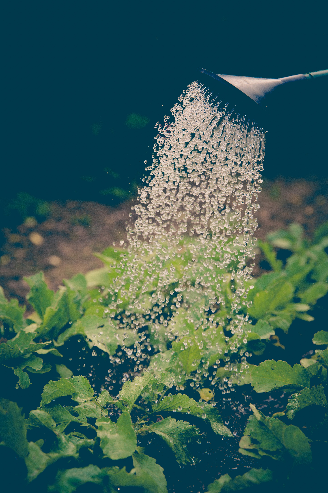
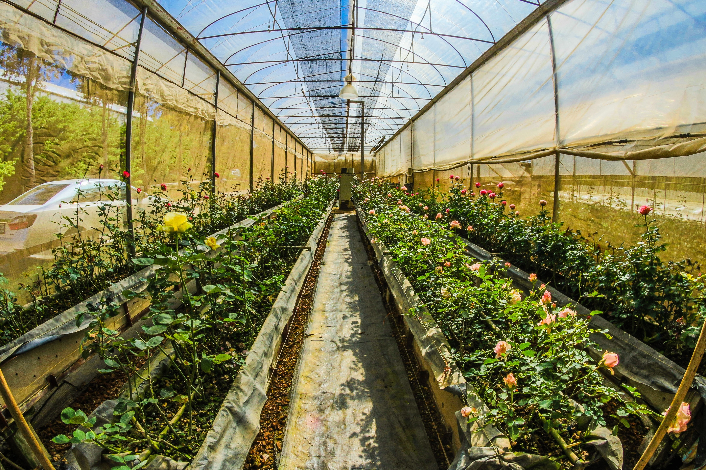

SERVICIOS
todos sabemos que las hierbas, plagas, insectos nocivos, hongos, lus solar, y nutrientes pueden tener un impacto
devastador en la produccion de sus cultivos. Pero no hay de que preocuparse cuando venga con nostros
le ayudaremos con su inquietud brindadole servicios como:

Herramientas agrícolas y maquinaria agricola

Acesoramiento en el uso de productos quimicos: herbicidas, fungicidas, insecticidas, acaricidas, abonos y mucho mas

Transferencia de información agronomica que le permitirá mayor resultados en la produccion de sus cultivos.